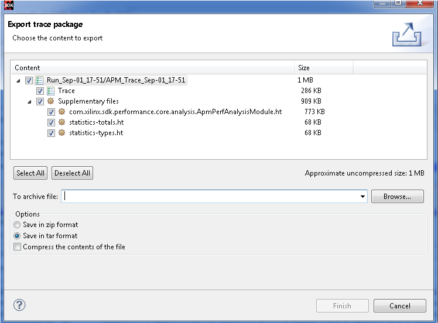

The Export Trace Packagewizard allows users to select a trace and export its files and bookmarks to an archive on a media.
The Traces folder holds the set of traces available for a tracing project. To export traces contained in the Traces folder:
-
Select from the File main menu.
The Export dialog box appears.
-
Expand Tracing and select Trace Package Export.
-
Click Next.
The
Export trace package dialog box appears.

-
Select the project containing the traces and then the traces to be exported.
-
You can also open the Export trace package wizard by expanding the project, in the Project Explorer view, selecting the traces under the Traces folder, and selecting the Export Trace Package from the context menu that appears.
-
You can now select the content to export and various format options for the resulting file.

The table below provides details of all the options available on the Export trace package dialog box.
| Option |
Description |
| Content |
Lists the files that consititute the trace. The Trace item is always selected. The Supplementary files items represent the files that are typically generated when a trace is opened by the viewer. Sharing these files can speed up opening a trace dramatically but also increases the size of the exported archive file. |
| Size |
Helps to decide whether or not to include the trace files. |
| Bookmarks |
Select to export all the bookmarks so that they can be shared along with the trace. |
| To archive file |
Specify the location to save the resulting archive. |
| Options |
Allows you to choose between a tar archive or a zip archive. Compression can also be toggled on or off. |
-
Click Finish to generate the package and save it to the media. The folder structure of the selected traces relative to the Traces folder is preserved in the trace package.